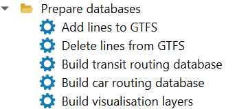
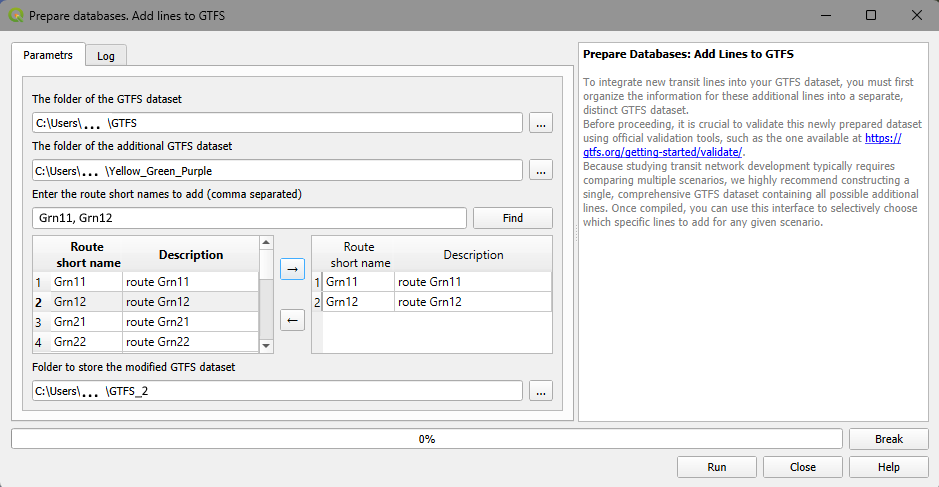
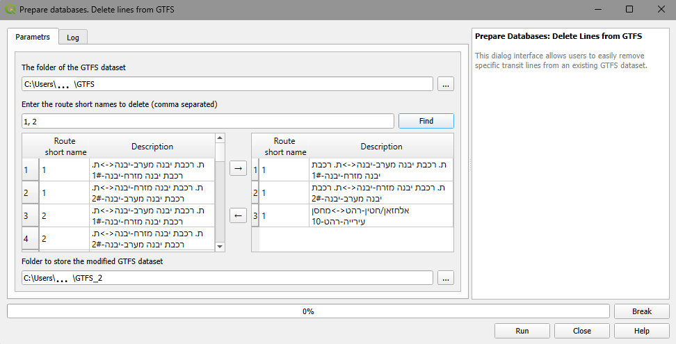
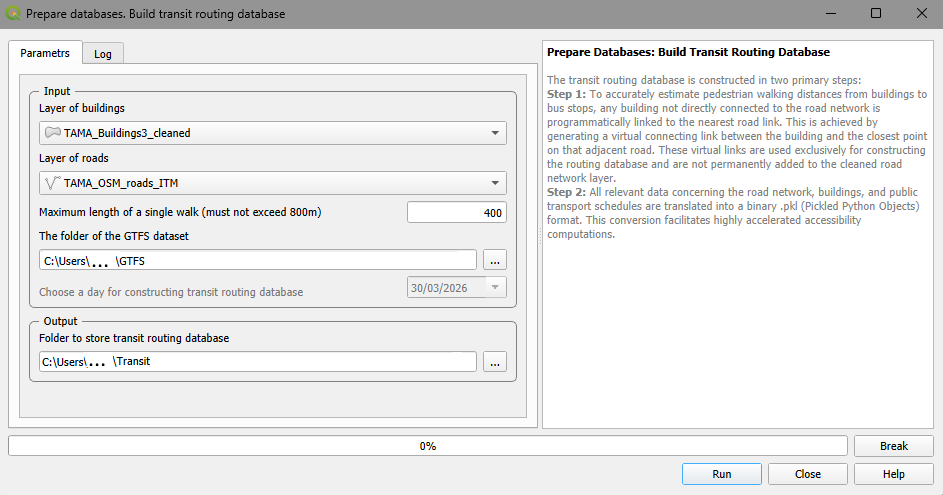
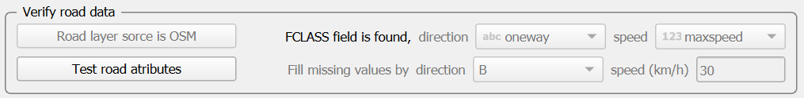
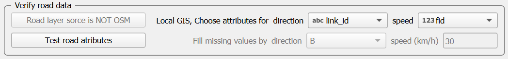
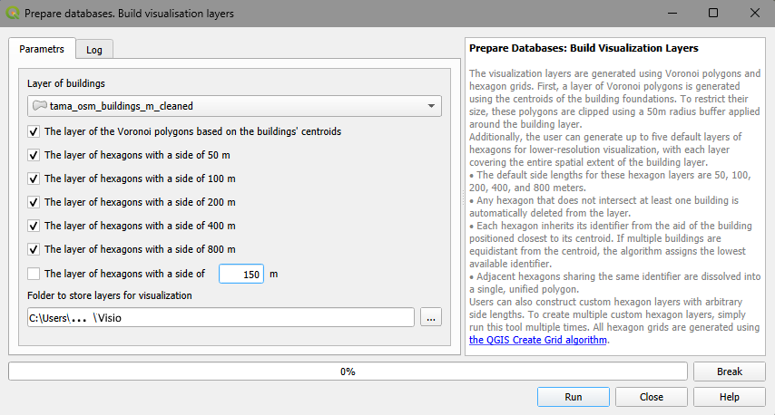

4. Prepare databases
To facilitate rapid accessibility computations, data regarding roads, buildings, and public transport routes and timetables are converted into dedicated databases. We recommend constructing these databases for a wider area (yet up to one million buildings) to ensure it covers all potentially relevant locations and regions. To establish and compare different public transport development scenarios, the AC plugin allows users to modify the existing GTFS by adding or deleting lines.
During database construction, any building not directly connected to the road network is connected to the nearest link within the cleaned road layer enabling establishing the network path between the building and nearby bus stops. All computational results are stored directly in the database, leaving the original road and building layers entirely unaltered.
The menu for the Prepare databases section is presented in Figure 4.

Figure 4. The menu of the Prepare Databases section
4.1. Add lines to GTFS
The user is responsible for organizing additional lines as a separate GTFS dataset, manually or using external software. The example in this tutorial is constructed with the Google’s TransitFeed Python library (https://github.com/google/transitfeed) that aims for reading, validating, and writing transit schedule information in the GTFS format. Another library that can be used for this purpose is https://github.com/ipea/gtfstools/blob/main/README.md.
To avoid the format errors in this new dataset, it is crucial to validate it using the official validation tools, like https://gtfs.org/getting-started/validate/. Since the study of transit network development demands, usually, comparison of several scenarios, we recommend constructing one GTFS of all possible additional lines; then some of them can be selected via the dialog interface for incorporating into the existing GTFS (Figure 5).

Figure 5. The Add lines to GTFS dialog
When using the “Add lines to GTFS” tool, the user must configure the following parameters:
The folder of the initial GTFS dataset: The directory containing the baseline GTFS.
The folder of the additional GTFS dataset : The user must select the directory containing the new GTFS data for the transit lines they wish to add to the network.
Line selection panels (and search bar): The dialog features a dual-pane interface to select the specific routes to be added. The left pane lists the routes of the additional GTFS dataset (displaying their Short Name and Description). The user selects the desired routes and uses the right-pointing arrow (→) to move them into the right pane.
If you need to quickly find lines in the left pane, use the - Enter short names of lines to add (comma separated) search bar and the Find button to filter the list.
Note
After the search is performed, the left pane shows the found lines only. To restore the full list of lines in the left panel empty the search bar and click the Find button again
Folder to store the modified GTFS dataset: The user must choose the destination directory where the newly combined and modified GTFS dataset will be saved.
Once all desired lines are selected in the right pane, click Run to execute the merger. The progress bar at the bottom will display the status of the operation.
4.2. Delete lines from GTFS
This dialog allows users to remove specific transit lines from the existing dataset (Figure 6).

Figure 6. The Delete lines from GTFS dialog
When using the “Delete lines from GTFS” tool, the user must configure the following parameters:
The folder of the initial GTFS dataset: Specify the directory containing the original GTFS files from which transit lines will be removed.
Enter route short names to delete (comma separated): This search bar allows the user to quickly locate specific transit lines by their short route names. Enter the numbers separated by commas and click the Find button to filter the available routes in the left pane list.
Note
After the search is performed, the left pane shows the found lines only. To restore the full list of lines in the left panel empty the search bar and click the Find button again
Line selection panels: The dialog uses a dual-pane interface to manage line deletion. The left pane lists the routes available within the initial GTFS dataset. The user must select the routes they wish to remove and use the right-pointing arrow (→) to move them into the right pane. Any lines placed on the right pane will be excluded from the final dataset.
Folder to store modified dataset: Select the destination directory where the newly modified GTFS dataset (which will no longer contain the deleted lines) will be saved.
Once all fields are populated and the unwanted lines are moved to the right pane, click Run to generate the new dataset. The progress bar at the bottom will track the operation’s status.
4.3. Building a database for transit accessibility computations
To construct the database required for transit accessibility computations, select Prepare databases → Transit routing database (Figure 7):

Figure 7. The Transit routing database construction dialog
Layer of buildings: The topologically cleaned layer of building foundations must be a part of the current QGIS project.
Layer of roads: The topologically cleaned layer of road links must be a part of the current QGIS project.
Maximum length of a single walk (must not exceed 800 m): The upper limit on pedestrian network walks between a building and a transit stop. A strict maximum limit of 800 meters is imposed. The default value for it is set to 400 meters.
GTFS folder: The directory path containing the GTFS dataset (
stops.txt,stop_times.txt,routes.txt,trips.txt,calendar.txt). By default, the system searches for a “GTFS” subfolder within the current QGIS project directory.Choose a day for constructing a database: the data in GTFS dataset covers a week or longer period of time. The control shows you the covered dates. Be careful to distinguish between working days and weekend.
Folder to store a database: The destination directory where the generated transit routing database will be saved. By default, the system suggests a subfolder within the project directory, using a concatenated name combining the GTFS folder’s name and “_json”.
Note
If you are constructing multiple transit routing databases (e.g., to evaluate different transit network scenarios), you must use separate, distinct folders for each one, as the generated dataset files utilize identical, constant filenames.
Click Run to execute. The Progress bar will track the computation status. You can halt the process at any time by clicking Break. The Log tab provides detailed information regarding the selected parameters and the overall database construction process.
In addition to constructing the transit routing database, this module generates two spatial layers and one internal database: The first is the layer of the PT lines (separated by direction), the second is the layer of the PT stops that visualize the GTFS database. The internal database contains artificial links of two kinds: Links of the first kind connect buildings that are not connected by the existing link to the nearest road link; links of the second connect stops located close to the transit lines to those lines. Links of both kinds enable walks between buildings that are not connected to the network by existing links and the nearby transit stops.
Note on GTFS Line Geometries: Transit routing does not require explicit geographic representation of the lines, and data providers frequently omit this detail. As a result, the generated lines may appear as straight-line connections between stops rather than following the actual physical road network.
In this tutorial, our analysis is limited to the Tel Aviv Metropolitan Area (TAMA), encompassing approximately 250,000 buildings. However, the provided GTFS datasets cover all of Israel, and the resulting transit routing databases are constructed on a national scale. The examples in this tutorial utilize two distinct versions of these GTFS databases: one from June 2018 (reflecting the transit system before the introduction of the Red LRT line in TAMA) and one from June 2024 (reflecting the network after the Red LRT line became operational). For a detailed, step-by-step example of building a transit routing database for TAMA, please refer to Section 10.2.
4.4. Building database for car accessibility computation
Constructing a car routing database requires a topologically clean road network and two essential attributes demanded by wayfinding algorithms:
Traffic direction: Can be B (two-way link), F (one-way link, driving allowed in the digitized direction), T (one-way link, driving allowed against the digitized direction), or N (pedestrian-only link, always two-directional).
Free-flow traffic speed: The unimpeded speed limit along the link.
Given a clean road layer, the Accessibility Calculator evaluates the layer’s attributes to identify candidates for these two fields, and the OSM and non-OSM road layers are handled slightly differently. To recognize the source, the user must Check if road layer is OSM.
If the source is the OSM database, the link’s traffic direction is derived from the ONEWAY attribute, and the free-flow traffic speed is derived from the MAXSPEED attribute. The values of the MAXSPEED attribute are dictated by the road link type stored in the FCLASS attribute, e.g., highway, major city street, secondary neighborhood street.
The list of FCLASS types is defined at the OSM site and does not change, and the free-flow traffic speed by the FCLASS types is stored in the car_speed_by_link_type.csv table (Figure 8):
| OSM link type (FCLASS) | Maximum speed (free flow), km/h |
|---|---|
| busway | 18 |
| cycleway | 15 |
| footway | 3 |
| motorway_link | 40 |
| track | 40 |
| residential | 30 |
| service | 40 |
| secondary | 50 |
| living_street | 30 |
| ... | ... |
Figure 8. The first several rows of the free-flow speeds table car_speed_by_link_type.csv The user can manually edit the values in this table.
If, for some reason, the link type in the FCLASS field is not listed in the car_speed_by_link_type.csv table, the default speed will be applied for the links of this type. Similarly, if the traffic direction in the ONEWAY field differs from B/F/T/N or not listed, the default direction B (two-way) will be applied.
The actual travel speed on a link is determined by the free-flow speed multiplied by a congestion delay coefficient, which varies depending on the hour of the day. The average hourly speed is calculated using the Congestion Delay Index - CDI(t) - the ratio of the average speed at a specific hour to the free-flow speed. Hourly CDI(t) values are stored in the cdi_index.csv table (Figure 9), which is based on Figure 12 from Wei et al. (2022) (https://doi.org/10.1016/j.eiar.2022.106808).
The adjusted speed \(V_{FCLASS}(t)\) on the link l at hour t is calculated as:
\(V_{FCLASS}(t) = V_{FCLASS} \cdot \text{CDI(t)}\)
| Hour of the day | Congestion Delay Index |
|---|---|
| 0 | 1.00 |
| 1 | 1.00 |
| 2 | 1.00 |
| 3 | 1.00 |
| 4 | 1.00 |
| 5 | 0.90 |
| 6 | 0.75 |
| 7 | 0.60 |
| ... | ... |
Figure 9. The CDI(t) table cdi_index.csv.
The user can customize Car Speed and CDI parameters by editing two reference tables: car_speed_by_link_type.csv and cdi_index.csv. These modifications can be applied either globally (permanently) for all future database builds, or locally for specific project calculations.
To change default values across all future car routing database builds, update the master configuration files located in your QGIS user profile. Make your file explorer to show hidden items and navigate to your QGIS configuration folder depending on your installed version:
C:\Users\<YourUsername>\AppData\Roaming\QGIS\QGIS3\profiles\default\python\plugins\tau_net_calc\config\ or
C:\Users\<YourUsername>\AppData\Roaming\QGIS\QGIS4\profiles\default\python\plugins\tau_net_calc\config\
Edit and save the target CSV files. All subsequent network builds will use these values as defaults.
For the project-specific changes with the existing car routing database, find these files in the folder where you currently used car database is stored (see below in this section) and edit the local copies of car_speed_by_link_type.csv and cdi_index.csv. When a car routing database is constructed, the plugin copies both system tables directly into this folder and exploits them for computations. Locate modifications are applied directly during runtime without a pre-computation confirmation or validation step. Ensure data formatting and value ranges are correct before launching computations.
To construct a car routing database, go to Prepare Database → Car routing database (Figure 10):

Figure 10. The Car routing database construction dialog
Layer of buildings: The clean building layer, which must be a part of the current QGIS project.
Layer of roads: The clean layer of road links, which must be a part of the current QGIS project.
Verify road data block
Check if road layer is OSM: Click the button for checking
If the source of the road layer is OSM, the dialog will be extended as in Figure 11: you will see the obligatory fields of the OSM

Figure 11. The Car routing database construction dialog in case the source of the road layer is OSM
If the source of the road layer is not OSM, the dialog will be extended as in Figure 12.

Figure 12. The Car routing database construction dialog in case the source of the road layer is not OSM
The user must explicitly provide the fields representing traffic direction and free-flow speed
Choose attribute for direction: Choose one of the fields in the roads layer containing the traffic direction (B, F, T, or N). Typically, one field only satisfies this condition
Choose attribute for speed: The attribute field in the roads layer containing the link’s free-flow speed. All numeric fields are typically listed, choose one with great care.
Test road attributes: Critical road attributes must be verified before database constructing. The values of maximum speed and the values of the direction attribute must be exactly B, F, T, or N and known for the great majority of links, while the speeds must be between 0 and 120 km/h. When testing this, NULL or missing values, if their share is not high enough, are substituted by the default values.
The default values of link direction and speed must be provided for any road layer:
Default link direction: The fallback traffic direction applied when unknown, always defaults to B.
Default link speed (km/h): The fallback free-flow speed applied when a link’s speed is unknown.
Output block
Folder to store car database: The destination directory where the database will be saved. The system defaults to suggesting the same subfolder used for the transit routing database, named by concatenating the project name (e.g., TAMA) and “_CAR_json”.
Once all tests pass, the user can proceed by clicking Run to build the car routing database. The Progress bar tracks the computation, and the operation can be interrupted at any time using the Break button.
The Log tab records parameter details and construction progress. For a comprehensive example of building a car routing database, see Section 10.2.
4.5. Preparing layers for visualization and lower-resolution computation
The Accessibility Calculator can perform computations at the resolution of a single building, the highest possible level, or at the aggregated levels of hexagons of the size chosen by the user. When the computations are performed at a resolution of buildings, a discontinuous layer of building footprints is unsuitable for clear visualization at the building resolution, the high-resolution visual representation is instead based on Voronoi polygons generated from the building centroids (https://docs.qgis.org/3.40/en/docs/user_manual/processing_algs/qgis/vectorgeometry.html#voronoi-polygons) that inherit the unique aid identifiers of their corresponding buildings. To prevent large polygons of the stand-alone buildings or at the boundaries of the study area, the Voronoi polygons are clipped using 50 m radius buffers around the building centroids.
For the lower resolution computation and visualization, the Accessibility Calculator exploits hexagon layers. The default hexagon side lengths are 50, 100, 200, 400, and 800 m, though user-defined dimensions can also be specified. The QGIS Create Grid algorithm (https://docs.qgis.org/3.40/en/docs/user_manual/processing_algs/qgis/vectorcreation.html#create-grid) is utilized to construct these hexagon layers.
Each hexagon layer covers the full extent of the building layer, and any hexagon that does not overlap a building is automatically excluded. Each hexagon inherits its aid identifier from the building closest to its centroid. If multiple buildings are equidistant from the centroid, the building with the lowest aid value is selected. A single building might be the closest to more than one hexagon centroid; in such cases, those adjacent hexagons are dissolved into a single polygon.
When exploiting hexagon layer for accessibility computations at a lower than building resolution the computations are performed for the building which aid is the same as the aid of a hexagon and the results are assigned to the hexagon. When computing Cumulative Opportunities, parameters of all buildings which centroids are within the hexagon are summed up. These sums are prepared at the stage of the hexagons construction for every numeric attribute of the layer of buildings besides ID-related ones. The sums are stored as hexagons’ attributes which names repeat the names of the attributes in the layer of buildings.
Note
The hexagons are also used for lower-resolution assessment of accessibility, and the attributes of the hexagons are computed based on the buildings’ attributes. That is why, if buildings’ attributes are changed, the layers of hexagons must be rebuilt.
To generate layers of Voronoi polygons and hexagons, go to Prepare Databases → Build visualization layers (Figure 13):

Figure 13. The Build visualization layers dialog
Layer of buildings: The topologically clean building layer, which must be a part of the current QGIS project. All active polygon layers will appear in the dropdown menu; ensure you select the correct one.
Folder to store layers for visualization: The destination directory for the generated visualization layers. By default, the system suggests a subfolder within the project directory, named by concatenating the project name (e.g., TAMA) and “_visio”. We recommend utilizing this designated folder for all visualization outputs.
Click Run to initiate the process. The Progress bar tracks the computation status. You can halt the layer generation at any time by clicking Break. The Log tab records detailed information regarding the selected parameters and the overall construction process.
Upon completion, the newly generated layers are automatically added to the current GIS project.